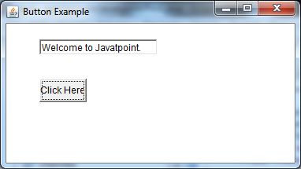

Java ActionListener Interface
17 Mar 2025 | 3 min read
The ActionListener interface in Java is part of the Swing framework and is used to handle events generated by GUI components like buttons, menus, and text fields. It provides a way to respond to user interactions with these components by defining the actionPerformed() method that gets invoked when an action event occurs. It is notified against ActionEvent. The ActionListener interface belongs to java.awt.event package. It has actionPerformed() method only.
Before using the ActionListener interface, you need to import the necessary packages. In the case of Swing components, we typically import javax.swing.* and java.awt.event.*.
actionPerformed() Method
The actionPerformed() method is invoked automatically whenever we click on the registered component.
public abstract void actionPerformed(ActionEvent e);
How to Write ActionListener
The common approach is to implement the ActionListener. If we implement the ActionListener class, we need to follow 4 steps:
- Import Necessary Packages:
import java.awt.event.ActionListener; - Implement ActionListener Interface:
To handle action events, we need to implement the ActionListener interface. It involves implementing the actionPerformed() method that contains the code to be executed when an action event occurs.
public class MyActionListener implements ActionListener { @Override public void actionPerformed(ActionEvent e) { // Action event handling logic goes here } } - Register ActionListener with GUI Component:
We can register the ActionListener with a component (e.g., Button) using the addActionListener() method.
Button button = new Button("Click Me"); button.addActionListener(new MyActionListener()); - Implement the Action:
Define the logic inside the actionPerformed() method to handle the event.
@Override public void actionPerformed(ActionEvent e) { System.out.println("Button Clicked!"); }
Examples
Java AWT ActionListener Example
ActionListenerExample.java
import java.awt.event.*;
import java.awt.*;
public class ActionListenerExample {
public static void main(String[] args) {
// Create a new frame with the title "ActionListener Example"
Frame f = new Frame("ActionListener Example");
// Create a text field
final TextField tf = new TextField();
tf.setBounds(50, 50, 150, 20); // Set bounds (position and size) for the text field
// Create a button
Button b = new Button("Click Here");
b.setBounds(50, 100, 60, 30); // Set bounds (position and size) for the button
// Add ActionListener to the button using an anonymous inner class
b.addActionListener(new ActionListener() {
// Method invoked when the button is clicked
public void actionPerformed(ActionEvent e) {
// Set text of the text field when the button is clicked
tf.setText("Welcome to Javatpoint.");
}
});
// Add components to the frame
f.add(b); // Add button to the frame
f.add(tf); // Add text field to the frame
// Set frame size, layout, and visibility
f.setSize(400, 400); // Set frame size
f.setLayout(null); // Set layout manager to null (absolute positioning)
f.setVisible(true); // Make frame visible
}
}
Output:
